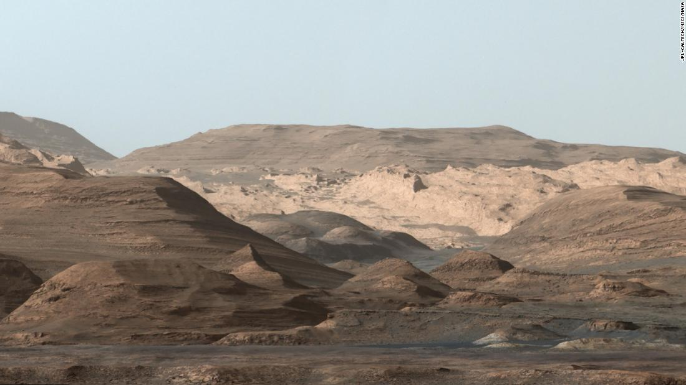

Marte
 Características físicas
Características físicas
| Masa | 6.42x10^23 kg |
| Radio | 3389 km |
| Distancia relativa al Sol | 1.66 UA |
| Tiempo en completar la órbita | 686 días |
| Temperatura media | -46ºC |
| Número de satélites conocidos | 2 |
Marte es el cuarto planeta en orden de distancia al Sol y el segundo más pequeño del sistema solar, después de Mercurio. Recibió su nombre en homenaje al dios de la guerra de la mitología romana (Ares en la mitología griega), y también es conocido como "el planeta rojo" debido a la apariencia rojiza que le confiere el óxido de hierro predominante en su superficie. Marte es el planeta interior más alejado del Sol. Es un planeta telúrico con una atmósfera delgada de dióxido de carbono, y posee dos satélites pequeños y de forma irregular, Fobos y Deimos (hijos del dios griego), que podrían ser asteroides capturados similares al asteroide troyano (5261) Eureka. Sus características superficiales recuerdan tanto a los cráteres de la Luna como a los valles, desiertos y casquetes polares de la Tierra.
Propiedades de la atmósferaSobre la base de datos observados fundamentalmente desde la órbita marciana se ha deducido que la composición atmosférica del planeta es fundamentalmente: dióxido de carbono en un 95,3 %, con un 2,7 % de nitrógeno, 1,6 % de argón y trazas de oxígeno molecular (0,15 %), monóxido de carbono (0,07 %) y vapor de agua (0,03 %). La proporción de otros elementos es ínfima y escapa su dosificación a la sensibilidad de los instrumentos hasta ahora empleados. No obstante, debido a la confirmación en 2015 de la presencia de agua estacional en la superficie marciana por la NASA, los datos sobre la proporción de oxígeno y vapor de agua atmosféricos deben ser revisados. Con criterio temporal también se ha supuesto que el contenido de ozono es 1000 veces menor que en la Tierra, por lo que esta capa, que se encuentra a 40 km de altura, sería incapaz de bloquear la radiación ultravioleta.
 Exploración espacialLa exploración espacial de Marte comenzó en el contexto de la carrera espacial entre Estados Unidos y la Unión Soviética, durante el período de la Guerra Fría. El interés en Marte y en la posibilidad de que albergue vida se remonta ya a 1877, cuando el astrónomo italiano Giovanni Schiaparelli afirmó haber visto canales por todo el planeta. Posteriormente, otros astrónomos intentaron comprobar la postulación del astrónomo estadounidense Percival Lowell, que sugería que los presuntos canales descubiertos por Schiaparelli eran un sistema de irrigación creado por seres inteligentes. Aunque no había pruebas reales de estas especulaciones, se creó toda una serie de teorías o mitos sobre Marte, que trascendieron en la literatura y en la creación de leyendas sobre supuestos marcianos que habrían visitado la Tierra. El 26 de noviembre de 2011 fue lanzada la Mars Science Laboratory (abreviada MSL), conocida como Curiosity. Se trata de una misión espacial que incluye un astromóvil de exploración marciana dirigido por la NASA y que se centra en colocar sobre la superficie marciana un vehículo explorador de tipo rover. Este vehículo será tres veces más pesado y dos veces más grande que los vehículos utilizados en la misión Mars Exploration Rover, que aterrizaron sobre Marte en el año 2004, y portará los instrumentos científicos más avanzados. La comunidad internacional proporcionará algunos de estos instrumentos y se tiene planeado lanzarlo a través de un cohete Atlas V 541. Después de aterrizar, el rover tomará docenas de muestras de suelo y polvo rocoso marciano para su análisis. La duración de la misión será de 1 año marciano (1,88 años terrestres), y con un rango de exploración superior a los enviados anteriormente, investigará la capacidad pasada y presente de Marte para alojar vida.